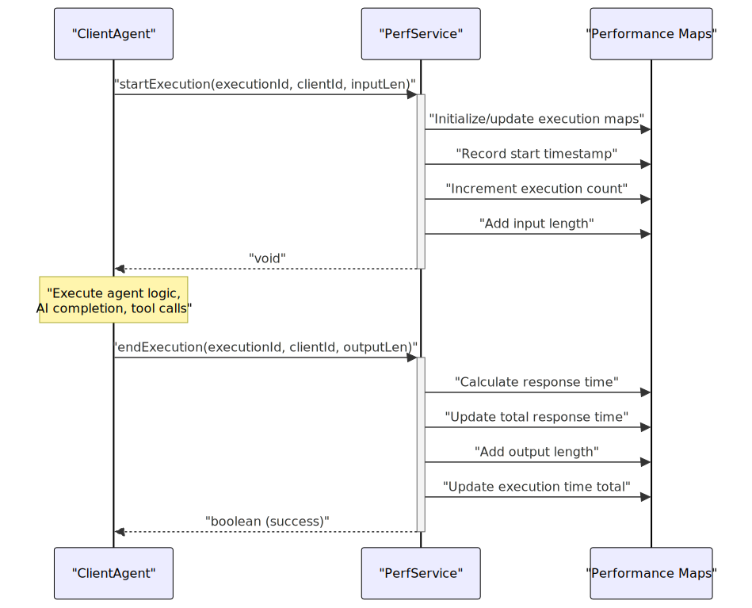

The Performance Monitoring system provides comprehensive tracking and reporting of execution metrics, response times, and resource usage across the agent swarm framework. This system captures detailed performance data at both the system-wide and client-specific levels, enabling monitoring of AI completion requests, agent executions, and overall system efficiency.
For information about AI completion adapters themselves, see Completion Adapters. For details on overall service architecture, see Service Architecture.
The PerfService class serves as the central performance tracking component, implemented as an injectable service that monitors execution metrics across client sessions.

The service tracks multiple execution maps to capture comprehensive performance metrics:
| Map | Purpose | Key | Value |
|---|---|---|---|
executionScheduleMap |
Track start times per execution | clientId → executionId |
number[] (timestamps) |
executionCountMap |
Count total executions per client | clientId |
number |
executionInputLenMap |
Total input bytes per client | clientId |
number |
executionOutputLenMap |
Total output bytes per client | clientId |
number |
executionTimeMap |
Total execution time per client | clientId |
number (milliseconds) |
The performance monitoring integrates with agent execution workflows through startExecution and endExecution methods:

The system defines two primary interfaces for performance data serialization:
System-wide performance aggregation containing all client metrics and global statistics:
interface IPerformanceRecord {
processId: string; // GLOBAL_CONFIG.CC_PROCESS_UUID
clients: IClientPerfomanceRecord[]; // Per-client performance data
totalExecutionCount: number; // Sum across all clients
totalResponseTime: string; // Formatted duration
averageResponseTime: string; // Calculated average
momentStamp: number; // Unix epoch days
timeStamp: number; // Seconds since midnight UTC
date: string; // UTC string format
}
Client-specific performance metrics with session context:
interface IClientPerfomanceRecord {
clientId: string;
sessionMemory: Record<string, unknown>; // From MemorySchemaService
sessionState: Record<string, unknown>; // Computed client state
executionCount: number;
executionInputTotal: number;
executionOutputTotal: number;
executionInputAverage: number;
executionOutputAverage: number;
executionTimeTotal: string; // Formatted with msToTime
executionTimeAverage: string; // Formatted with msToTime
}
The performance monitoring system integrates with AI completion adapters through execution pooling and retry mechanisms:

Each adapter method (fromOpenAI, fromOllama, fromCohereClientV2, fromLMStudio, fromGrok) implements consistent performance characteristics:
EXECPOOL_SIZE (5) with EXECPOOL_WAIT (0ms) delayRETRY_COUNT (5) attempts with RETRY_DELAY (5000ms) between failuresLogger.logClient() for traceabilityAll adapters use the same execpool and retry wrapper pattern, ensuring consistent performance behavior across different AI providers.
The PerfService provides multiple methods for retrieving calculated performance metrics:
| Method | Return Type | Purpose |
|---|---|---|
getActiveSessionExecutionCount() |
number |
Total executions for client |
getActiveSessionExecutionTotalTime() |
number |
Total execution time (ms) |
getActiveSessionExecutionAverageTime() |
number |
Average execution time (ms) |
getActiveSessionAverageInputLength() |
number |
Average input size per execution |
getActiveSessionAverageOutputLength() |
number |
Average output size per execution |
getActiveSessionTotalInputLength() |
number |
Total input bytes processed |
getActiveSessionTotalOutputLength() |
number |
Total output bytes generated |
| Method | Return Type | Purpose |
|---|---|---|
getActiveSessions() |
string[] |
List of active client IDs |
getAverageResponseTime() |
number |
Global average response time (ms) |
getTotalExecutionCount() |
number |
Total executions across all clients |
getTotalResponseTime() |
number |
Total response time across all clients (ms) |
The performance system computes comprehensive client state by aggregating data from multiple services:

The toRecord() method creates comprehensive performance snapshots using timestamp utilities and global configuration:
